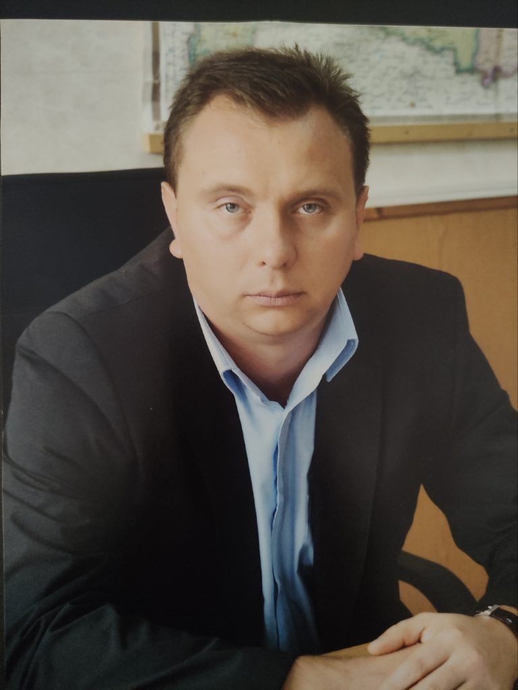
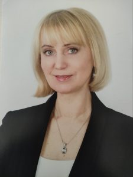
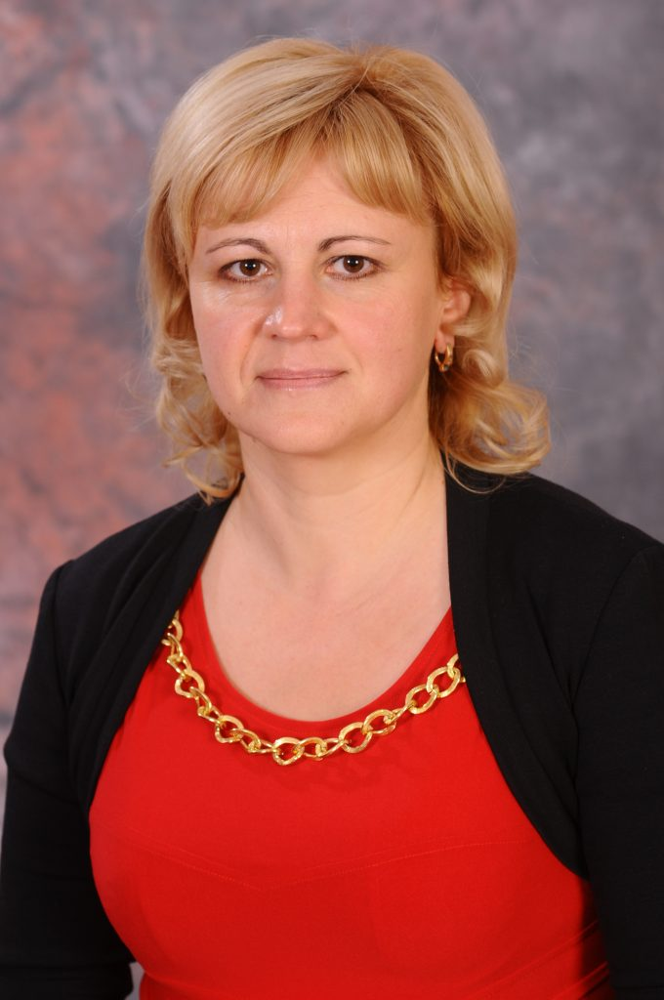
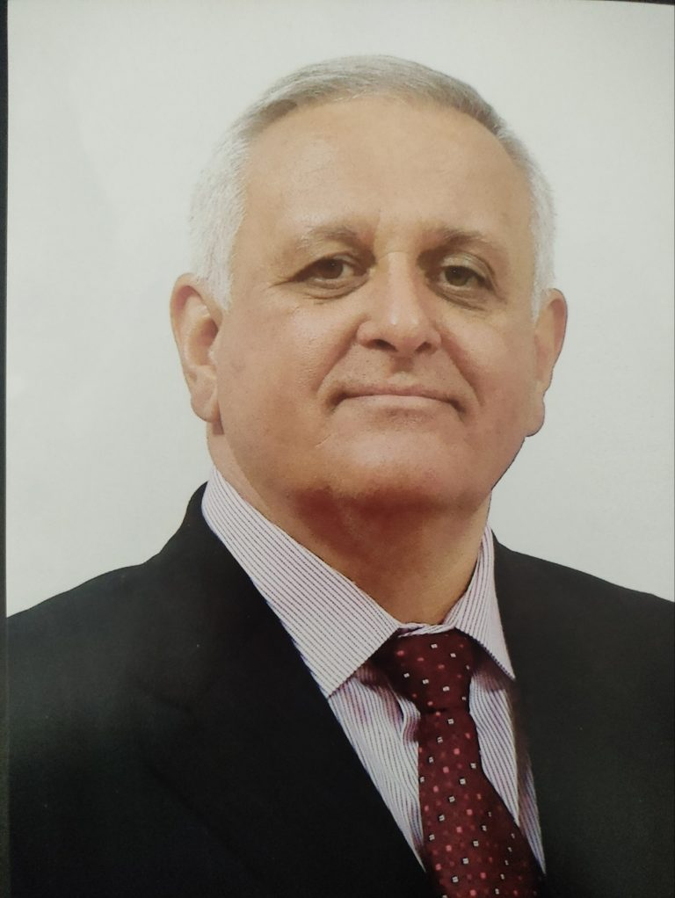
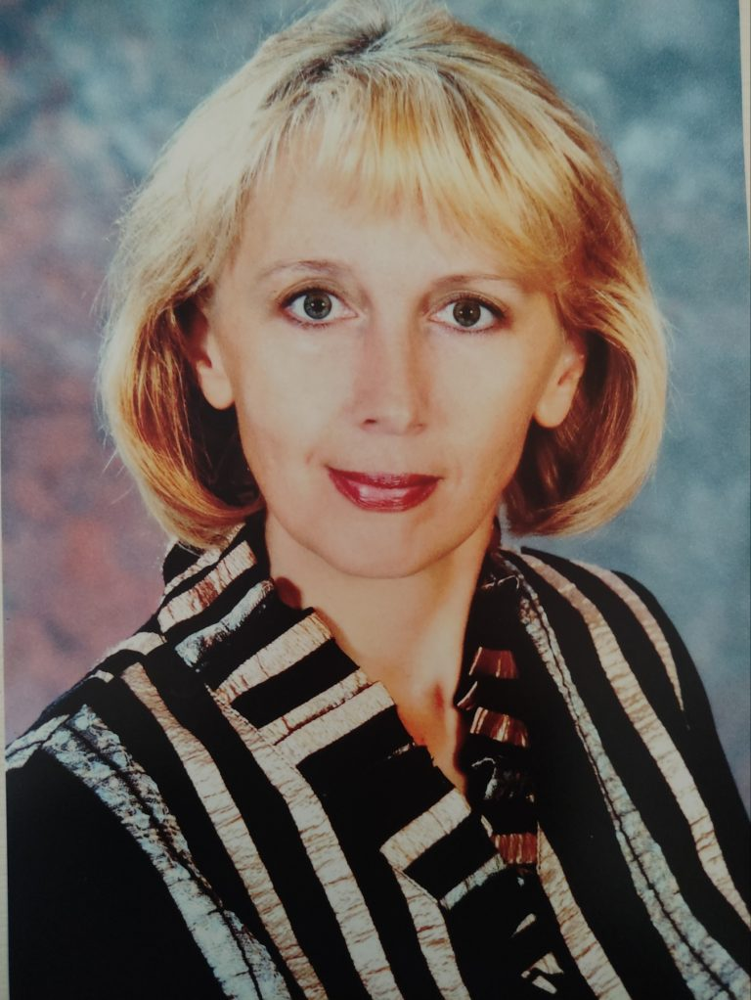

Структура колледжа
Учреждение образования «Бобруйский государственный аграрно-экономический колледж»
Директор: Коновалов Евгений Александрович
Администрация
Директор колледжа
Коновалов Евгений Александрович
Тел.: 8 (0225) 71-76-11
Корпус 1, каб. 13
Заместитель директора по учебной работе
Кустова Полина Александровна
Тел.: 8 (0225) 76-41-41
Корпус 1, каб. 19
Заместитель директора по учебно-производственной работе
Кирова Елена Сергеевна
Тел.: 8 (0225) 43-50-19
Корпус 1, каб. 4
Главный бухгалтер
Руденко Марина Григорьевна
Тел.: 8 (0225) 71-76-16
Корпус 1, каб. 15
Заведующий отделением
Глёкова Ольга Павловна
Корпус 1, каб. 29
Руководитель по военно-патриотическому воспитанию
Сакач Владимир Иванович
Корпус 2, каб. 11
Заведующий общежитием
Прытыко Валентина Викторовна
Тел.: 8 (0225) 72-04-32
Общежитие

Заместитель директора по воспитательной работе
Белявская Виктория Сергеевна
Тел.: 8 (0225) 70-07-78
Корпус 2, каб. 13
Заместитель директора по хозяйственной работе
Яхимович Инна Анатольевна
Тел.: 8 (0225) 72-19-85
Корпус практических занятий

Заведующий отделением
Стасев Игорь Петрович
Тел.: 8 (0225) 72-07-22
Корпус 1, каб. 5
Руководитель практики
Деленда Светлана Владимировна
Тел.: 8 (0225) 71-01-40
Корпус 1, каб. 9
Заведующий отделением
Кравченя Татьяна Петровна
Корпус 2, каб. 12
Специалисты
Руководитель физического воспитания и здоровья
Крук Владимир Федорович
Корпус 1, спортивный зал

Юрисконсульт
Гончарова Юлия Сергеевна
Тел.: 8 (0225) 43-21-58
Корпус 1, каб. 11

Инспектор по кадрам
Сашина Наталия Петровна
Тел.: 8 (0225) 43-21-58
Корпус 1, каб. 11

Секретарь учебной части
Семенчук Надежда Валерьевна
Тел.: 8 (0225) 43-02-57
Корпус 1, каб. 6

Общая структура колледжа
Аппарат управления
- Заместитель директора по учебной работе: Кустова Полина Александровна
- Заведующие отделением
- Методист
- Секретарь учебной части
- Преподаватели
- Лаборанты
- Заместитель директора по учебно-производственной работе: Кирова Елена Сергеевна
- Руководитель практики
- Мастера производственного обучения
- Заместитель директора по воспитательной работе: Белявская Виктория Сергеевна
- Педагог-социальный
- Педагог-психолог
- Воспитатели
- Заведующий общежитием
- Педагоги дополнительного образования
- Библиотекарь
- Руководитель физического воспитания
- Руководитель по военно-патриотическому воспитанию
- Педагог-организатор
- Заместитель директора по хозяйственной работе: Яхимович Инна Анатольевна
- Комендант
- Дежурный по общежитию
- Кастелянша
- Сторож
- Кладовщик
- Столяр
- Водитель автомобиля
- Дворник
- Рабочий по комплексному обслуживанию зданий и сооружений
- Техник
- Гардеробщик
- Электромонтёр
- Инженер-энергетик
- Уборщик помещений
- Главный бухгалтер: Руденко Марина Григорьевна
- Заместитель главного бухгалтера
- Бухгалтер
- Экономист
- Специалист по закупкам
- Секретарь: Антропова Виктория Васильевна
- Инженер-программист: Берников Александр Михайлович
- Инспектор по кадрам: Сашина Наталья Петровна
- Юрисконсульт (архивариус): Гончарова Юлия Сергеевна
- Паспортист: Кравцова Елена Михайловна
Педагогический состав
- 1.Александрова Светлана Викторовна, преподаватель высшей квалификационной категории
- 2.Барабаш Инга Степановна, преподаватель высшей квалификационной категории
- 3.Боровская Татьяна Николаевна, преподаватель высшей квалификационной категории
- 4.Братан Елизавета Леонидовна, мастер производственного обучения без квалификационной категории
- 5.Быстримович Юлия Алексеевна, преподаватель первой квалификационной категории
- 6.Галимская Татьяна Васильевна, преподаватель высшей квалификационной категории
- 7.Городнова Светлана Валерьевна, преподаватель первой квалификационной категории
- 8.Драпеза Анжелика Юрьевна, преподаватель высшей квалификационной категории
- 9.Дроздова Ольга Александровна, преподаватель без квалификационной категории
- 10.Слука Яна Владимировна, преподаватель без квалификационной категории
- 11.Ёщик Галина Васильевна, преподаватель первой квалификационной категории
- 12.Жилинский Владимир Дмитриевич, преподаватель высшей квалификационной категории
- 13.Иванова Вера Ивановна, преподаватель высшей квалификационной категории
- 14.Квасникова Валерия Юрьевна, преподаватель без квалификационной категории
- 15.Кондратьева Людмила Николаевна, преподаватель высшей квалификационной категории
- 16.Кравченко Марина Мирославовна, преподаватель высшей квалификационной категории
- 17.Куксенок Анастасия Дмитриевна, преподаватель без квалификационной категории
- 18.Лавриненок Софья Игоревна, преподаватель без квалификационной категории
- 19.Лавринова Марина Георгиевна, преподаватель высшей квалификационной категории
- 20.Латышева Виолетта Сергеевна, преподаватель без квалификационной категории
- 21.Михолап Алеся Александровна, преподаватель второй квалификационной категории
- 22.Орловская Ульяна Дмитриевна, преподаватель без квалификационной категории
- 23.Папкова Светлана Владимировна, преподаватель высшей квалификационной категории
- 24.Пищик Ирина Ивановна, преподаватель первой квалификационной категории
- 25.Пописха Жанна Михайловна, преподаватель высшей квалификационной категории
- 26.Рачинская Наталья Николаевна, мастер производственного обучения первой квалификационной категории
- 27.Русецкая Дарья Игоревна, преподаватель без квалификационной категории
- 28.Сакун Ирина Ивановна, преподаватель высшей квалификационной категории
- 29.Самак Елена Григорьевна, преподаватель без квалификационной категории
- 30.Ситникова Ирина Валерьевна, преподаватель первой квалификационной категории
- 31.Стульская Людмила Евгеньевна, преподаватель высшей квалификационной категории
- 32.Сысой Наталья Евгеньевна, преподаватель первой квалификационной категории
- 33.Трацевская Дарья Николаевна, преподаватель высшей квалификационной категории
- 34.Трутнев Александр Станиславович, преподаватель первой квалификационной категории
- 35.Трутнева Виктория Евгеньевна, преподаватель второй квалификационной категории
- 36.ХНА Наталья Ивановна, преподаватель первой квалификационной категории
- 37.Черепенко Наталья Владимировна, преподаватель высшей квалификационной категории
- 38.Шаверов Андрей Сергеевич, преподаватель высшей квалификационной категории
- 39.Шаверова Елена Анатольевна, преподаватель высшей квалификационной категории
- 40.Шейко Ирина Владимировна, преподаватель высшей квалификационной категории
- 41.Шиманская Маргарита Александровна, преподаватель высшей квалификационной категории
- 42.Широкая Олеся Олеговна, преподаватель высшей квалификационной категории
- 43.Шкрадюк Алеся Викторовна, преподаватель без квалификационной категории
- 44.Шуст Елизавета Олеговна, преподаватель без квалификационной категории